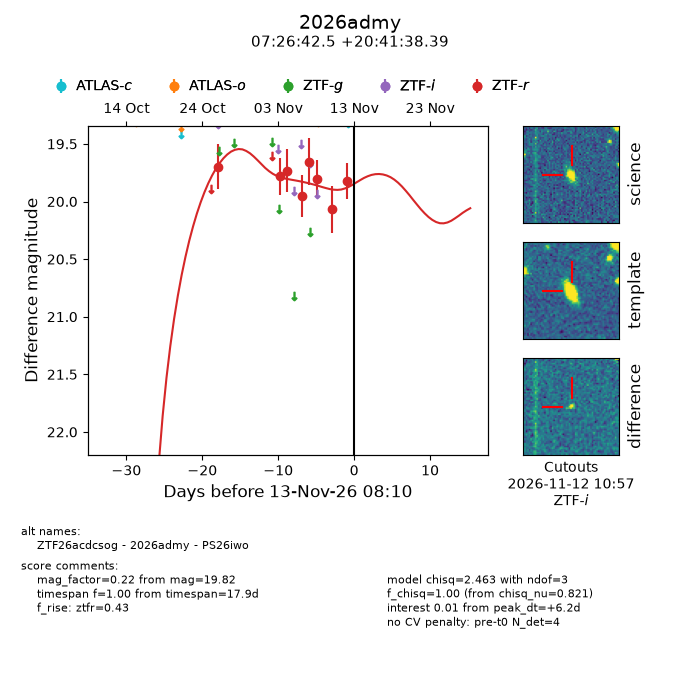
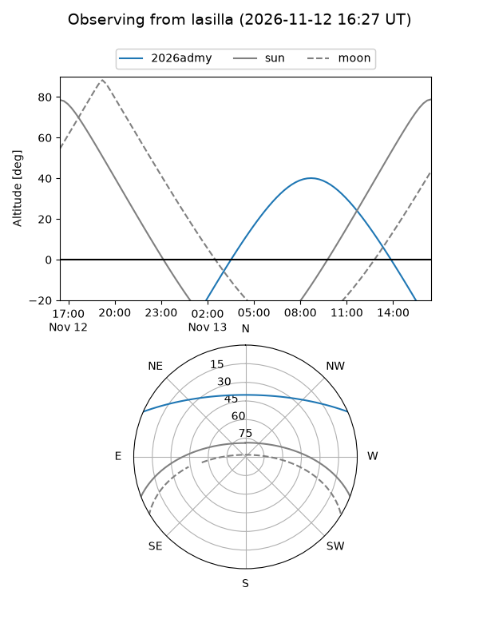
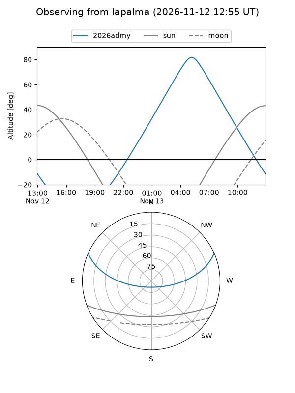
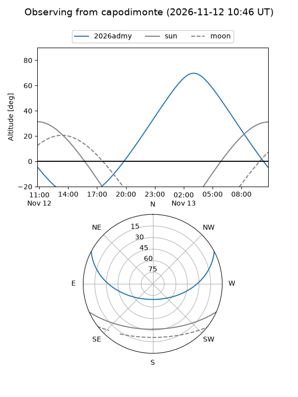
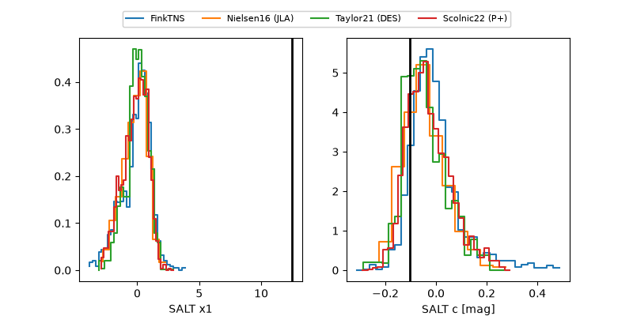

2026admy
Target 2026admy at 2026-11-13 09:30
Aliases and brokers:
FINK-ZTF: ztf.fink-portal.org/ZTF26acdcsog
Lasair-ZTF: lasair-ztf.lsst.ac.uk/objects/ZTF26acdcsog
ALeRCE-ZTF: alerce.online/object/ZTF26acdcsog
YSE-PZ: ziggy.ucolick.org/yse/transient_detail/2026admy
TNS name: wis-tns.org/object/2026admy
Direct TNS query: direct search
alt names
ZTF26acdcsog (ztf,fink_ztf)
2026admy (tns,yse)
PS26iwo (panstarrs)
Coordinates:
equatorial (ra, dec) = 111.6771,+20.69400
equatorial (HMS+DMS) = 07:26:42.51,+20:41:38.39
galactic (l, b) = (197.8502,+16.78366)
Flags:
peak dt: +6.2
Photometry:
last ztfr=19.82
8 ztfr detections
Lightcurve

Visibility



Additional plots
